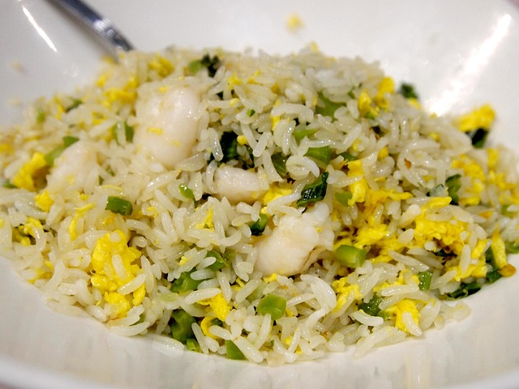

Home
Egg Fried Rice (Jidan Chao Fan)

Description
Fried rice is, while not very excitinig, a common and usually cheap food throughout China.
This is a quick and simple, no non-sense dish. It's great for when you need something to eat, but nothing strikes your fancy, or you're out of
ingredients, time, or energy to cook something else. That said, there are plenty of ways to add to this dish to make it both more nutritious and
delicious, such as ham, tofu, corn, diced carrots, green peas, bok choy, and so on.
Ingredients
- Cooked Jasmine Rice
- Chicken Eggs
- Green Onion
- Garlic
- Salt
- White Pepper
- Light Soy Sauce
- Sesame Oil
Steps
- Scramble 2 eggs. Add to a pre-heated pan or wok wth sesame oil. Beat the scrambled eggs into small pieces. Place to the side once
they are finished cooking.
- Add the rice to pan or wok. Add a bit of oil and minced garlic. Constantly stir, flip, and move the rice.
- Once the rice is hot, add the scrambled eggs and green onion. Then add soy sauce, salt, and white pepper.